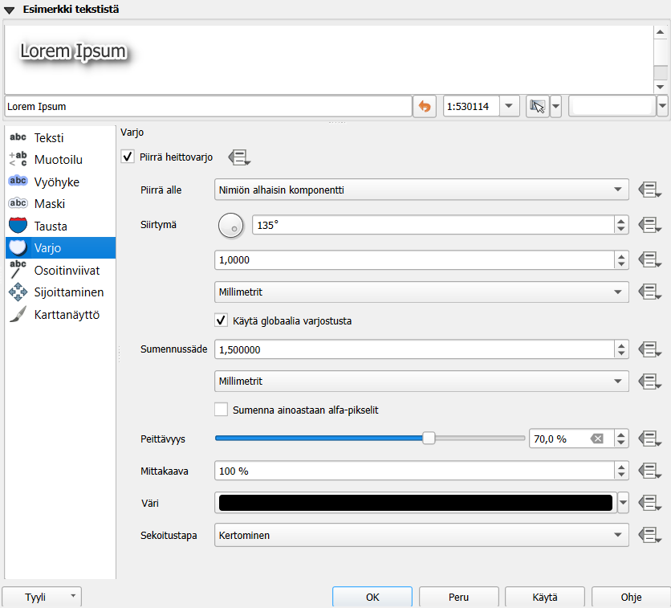

Harjoitus 4: Paikkatietoaineiston nimiöinti ja luokittelu
Harjoituksen sisältö
Harjoituksessa tutustutaan aineistojen nimiöinti- ja luokittelutoimintoihin.
Harjoituksen tavoite
Koulutettava oppii muodostamaan eri tyyppisille paikkatietokohteille tekstitykset ja oppii luokittelemaan paikkatietoaineistoja QGISin työkaluilla.
Valmistautuminen
Käynnistä QGIS-ohjelmisto. Avaa edellisen harjoituksen QGIS-projekti ja tallenna se nimellä (Projekti → Tallenna nimellä…) “QGIS_harjoitus_4”. Mikäli et tallentanut harjoitusta 3,
- Lisää projektiin seuraavat aineistot:
…/jv-johdot.TAB
…/jv-varusteet.TAB
…/viemäripiirit.TAB
Aseta aluksi jv-johdot.TAB-taso näkyviin ja muut näkymättömäksi
Nimiöt
QGIS käyttöliittymässä paikkatietokohteiden tekstitykseen viitataan termillä Nimiöt (englanninkielinen termi on “Labeling”). Avaa jv-johdot.TAB-tason Ominaisuudet-ikkuna ja valitse Nimiöt-välilehti. Valitse Yksinkertainen nimiöinti ja Nimiöiden perustana -alasvetovalikosta nimiöinnissä käytettävän sarakkeen nimi, esim. “HALK”. Paina Käytä, niin kohteille syntyy nimiöt. Tämä nähdään nyt karttaikkunasta, johon nimiöt ovat jo päivittyneet:

Nimiöiden tyyli- ja yleisasetukset
Nimiöiden tekstien näkymistä kartalla voi määrittää monella eri tavalla. Alla kuvaukset QGISin nimiöiden muokkaamisen alateemoista:
| Teksti | Määritellään tekstin tyyli, väri ja muita yleisiä ominaisuuksia |
| Muotoilu | Voit muodostaa useampirivisiä tekstejä, keskittää tekstiä ja määritellä lukujen muotoa |
| Vyöhyke | Luodaan tekstiä korostavat puskurit (tekstin reunukset) |
| Maski | Tekstiä korostavat puskurit, joiden vaikutusta alla oleviin tasoihin voi säädellä Tason ominaisuuksien Masks -välilehdellä |
| Tausta | Tekstin taustalle voi piirtää suorakulmion tai muun muodon |
| Varjo | Teksteille voidaan muodostaa varjo |
| Callouts | Voit siirtää nimiöitä karttanäkymässä vapaasti (Nimiöiden asetukset -työkalupalkin avulla) ja yhdistää tekstit niihin liittyviin kohteisiin viivalla |
| Sijoittaminen | Määrittelee tekstien sijoittumista kohteiden suhteen |
| Karttanäyttö | Määrittelee tekstien mittakaavarajoja ja muita tekstien näkyvyyteen liittyviä asioita |
Nimiön tekstityyli
Nimiöiden tekstien tyyleille voit asettaa esimerkiksi haluamasi fontin, tyylin ja koon.

Kokeile erilaisia tekstityylejä. Kokeile nimiöiden varjostamista, minkä avulla voimme korostaa nimiöitä taustalla olevista muista karttaelementeistä. Valitse Varjo-alateema ja rastita sitten Piirrä heittovarjo. Paina Käytä, jotta näkisit tulokset kartalla. Kokeile vaihtaa asetuksia kuten siirtymä, sumennussäde, peittävyys sekä väri, ja katso miten ne vaikuttavat nimiöinnin varjoon. Huomaat muutokset kartalta tai Esimerkki tekstistä -kentästä.

Toinen työkalu tekstin korostamiseen on tekstipuskuri. Valitse Vyöhyke-alateema ja lisää tekstille haluamasi puskuri rastimalla Piirrä tekstivyöhyke. Näin saat nimiöt erottumaan kartasta vielä paremmin. Kokeile erilaisia puskurin kokoja, värejä ja läpinäkyvyyttä.
Avaa vielä nimiöiden Sijoittaminen-alateema, ja valitse Seuraa viivaa ja Viivasuunnasta riippuva sijoittelu -toiminnot päälle. Paina Käytä, ja tarkista, että nimiöinti toimii odotetulla tavalla. Katso esimerkkiasetukset kuvasta:

Nyt nimiöt seuraavat viivoja paremmin. Huomaa myös, että kaikki nimiöt eivät nyt tule piirretyksi. Vaihda Maksimikulma kaarevien merkkien välillä -kohdan arvoja, niin pystyt muokkaamaan tekstin kaarevuuden reunaehtoja. Voit sulkea Ominaisuudet-ikkunan totuttuun tapaan painamalla OK. Rastita vielä päälle Yhdistä kytketyt viivat välttääksesi kopioidut nimiöt (tämä löytyy Karttanäyttö-alateeman Kohteen valinnat -kohdan alta).
Etsi vielä Sijoittaminen → Prioriteetti ja määritä se Korkeaksi.

Tällä tavalla annat preferenssin muokkaamasi tason nimiöille suhteessa muiden tasojen nimiöihin ja voit näin järjestää tärkeimpien ja ei niin tärkeiden tasojen nimiöintiä. Paina vielä OK.
Vektoriaineiston luokittelut
jv-johdot.TAB on vektoriaineisto. Tutustu ensin aineistoon. Avaa Attribuuttitaulu painamalla aineistotason nimen päällä hiiren oikealla näppäimellä.

Ominaisuustietotauluissa sarakkeiden nimet ovat usein lyhennetyssä muodossa.
Suodatetaan aineistosta pois esimerkiksi kohteet joiden rakennus vuodeksi on merkitty “0”: klikkaa tason nimeä hiiren oikealla ja valitse Suodata… Kirjoita (tai valitse tietokentistä ja operaattoreista klikkaamalla) suodatuslausekkeeksi “RAK_VUOSI” != 0. Voit testata suodatuksen toimivuutta klikkaamalla Testaa.
Nyt QGIS näyttää aineistostasi vain ne ruudut, jotka täyttävät annetun ehdon. Voit poistaa suodatuksen klikkaamalla tason vieressä olevaa “suppiloa”
ja poistamalla suodatuslauseen ja klikkaamalla lopuksi OK.
Paikkatietoineiston ymmärtäminen ennen sen käsittelyä on välttämätöntä. Voimme nyt esimerkiksi päättää, että haluamme tuottaa teemakartan RAK_VUOSI-sarakkeen tietojen pohjalta. Näin pystymme myös paremmin tulkitsemaan karttaa ja valitsemaan visualisointia varten sopivat asetukset. Avaa tason ominaisuudet ja valitse tason kuvaustekniikaksi Porrastettu. Aseta vielä oheisen kuvan mukaiset Sarake-, Liukuväri-, Tila- ja Luokat-määrittelyt.
Kun olet saanut ne asetettua, paina Luokittele, niin luokitus tulee näkyviin. Voit myös muokata manuaalisesti arvovälejä kaksoisklikkaamalla Arvot-saraketta tai luokkien nimiä kaksoisklikkaamalla Selite-saraketta. Luokkien nimet näkyvät Tasot-paneelissa ja myös karttatulosteen selitteessä. Paina Käytä, niin näet muutokset kartalla. Karttanäytölle pitäisi muodostua jokseenkin tämän näköinen tilastoteemakartta.

Jos Tasot-paneelissasi ei näy selitettä, paina tason nimen vasemmalla olevaa pientä nuolta ja selitteet avautuvat tason alle kuvan mukaisesti. Palaa vielä Kuvaustekniikka-asetuksiin ja kokeile Tila → Tasaväli ja vaihda Luokat. Voit hävittää olemassa olevat luokat painamalla Poista kaikki (Delete All) ja sitten uudelleen luokitella painamalla Luokittele. Kokeile myös vaihtaa luokkien lukumäärää, luokitustapoja ja värityksiä, kunnes löydät mielestäsi sopivan tuloksen.
Voit vertailla eri luokittelumenetelmiä ja tutkia aineiston jakaumaa histogrammin avulla. Histogrammi löytyy omalta välilehdeltään. Paina Lataa arvot saadaksesi histogrammin ja luokkien rajat näkyviin.

Lisätehtävä: nimiöiden piirtäminen
Loitonna karttanäkymää siten, että kaikki tasojesi kohteet tulevat näkyville. Voit tehdä tämän seuraavan työkalun avulla:
Joissakin tapauksissa olisi hyödyllistä määrittää nimiöt eri mittakaavoille erikseen. Avaa jv-varusteet tason ominaisuudet ja valitse Nimiöt-sivupalkista ja Valitse alasvetovalikosta “Yksinkertainen nimiöinti” ja arvoksi “VARUSTE”.
Mene sen jälkeen Karttanäyttö-alateemaan. Rastita päälle Mittakaavaperusteinen näkyvyys ja laita Minimi-kentän arvoksi 5000:

Paina OK. jv-varusteet-kohteiden nimiöt eivät enää näy 1:5000 mittakaavan ulkopuolella. Lähennä karttaan, kunnes nimiöt näkyvät uudelleen. Voit myös testata muita tekstittämiseen liittyviä edistyneempiä toimia. Voit muun muassa ohjata nimiöiden tekstejä lausekepohjaisesti käyttämällä merkkijonoja QGISin lauseke-työkalulla:

Kokeile yhdistää kaksi saraketta samaan nimiöön || -merkin avulla esimerkiksi seuraavalla tavalla: “sarake1 || sarake2”. Uuden rivin saat komennolla '\n' . Huomaa, miten Tuloksen esikatselu -kohtaan tulee esille nimiöinnin oletettu tulos (aineistosta otetuilla esimerkkiarvoilla).
Lisätehtävä: nimiöiden sijoittaminen
Jos haluat nimiöidä esim. viiva-aineiston niin, että vain silloin kun viivan ominaisuuden arvo muuttuu, nimiö tulee näkyville, mene tason ominaisuuksiin esim. klikkaamalla hiiren oikeaa ja valitsemalla sen jälkeen Nimiöt > Karttanöyttö. Tee kuvan mukaiset valinnat.

Seuraavaksi mene Sijoittaminen osaan ja valitse Nimiöiden ankkurointi > Asetukset.
Tee kuvan valinnat.
Psst! Muista tallentaa QGIS-projekti harjoituksen lopuksi.